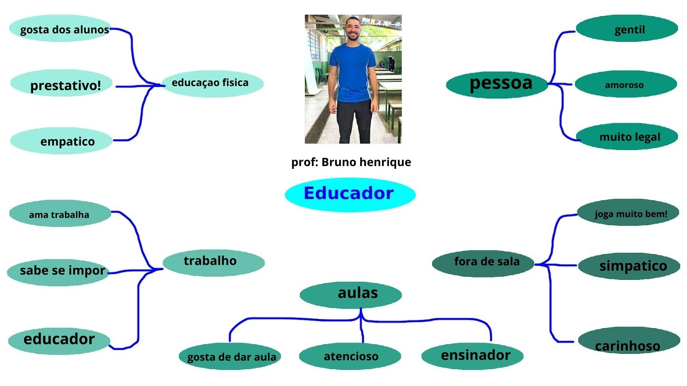
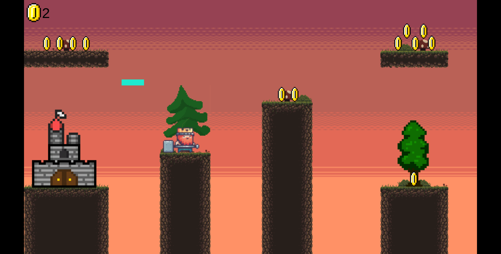

Formação Acadêmica: Formado em Geografia e Educação Física.
Do Que trabalhou: Já trabalhou no Mc Donalds e em lojas e foi fora do catalogo.
Para quais turmas do técnico dá aula e quais as matérias: 1° TDS.


Clique na imagem acima para jogar um produzido especialmente para a professora
Cândida!
Querido Professor Bruno,
Quero expressar minha profunda admiração pela sua competência como educador físico e pela forma como você vai além, nos apoiando também nas aulas de ensino técnico.
Com gratidão e apreço.
ASS: Erick Bernardes da Silva Santos
Acho você determinado a ajudar os alunos do curso técnico, e acho você muito legal.
ASS: Estafany Vitória 2° TDS
.
Obrigado Bruno por sempre ajudar o pessoal do técnico, mesmo sendo professor de educação física. É nois.
ASS: Jhonny Braga Reis 4º info
“O profissional de educação física transforma um corpo parado em um corpo vivo, cheio de atitude e alegria.”
Leonardo Rense de Aguiar - 4º INFO
Clique na imagem acima para dar sua opinião sobre nosso projeto!